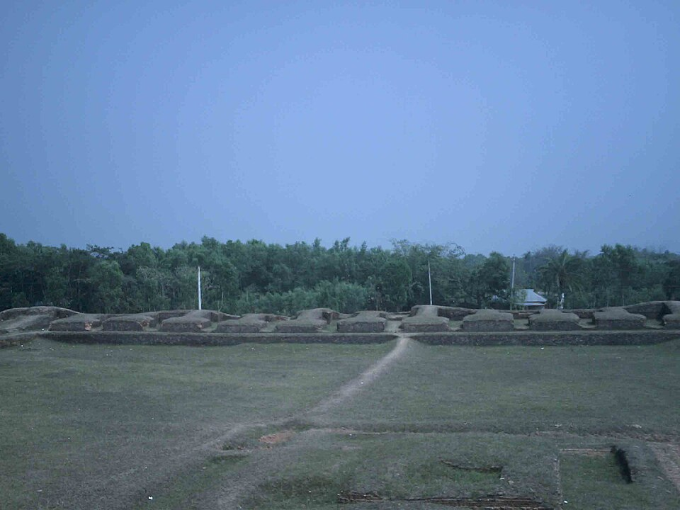

Region · Buddhist ruins & history
Comilla–Mainamati
Low hills outside Comilla hide a 7th-century Buddhist monastery, a museum of gold reliquary caskets, and a WWII war cemetery of remarkable quiet — all within three hours of Dhaka by bus.

Mainamati is one of Bangladesh's most rewarding half-day trips — and one of its least visited. The low ridge south of Comilla was occupied by Buddhist communities from the 7th to 12th centuries, and the Shalban Vihara excavations are among the finest Buddhist ruins in the subcontinent. The Mainamati Museum next door holds the best collection of Buddhist goldwork in the country. Then, minutes away, the CWGC war cemetery adds a completely different layer of history.
What to see
- Shalban Vihara. A large monastery complex of over one hundred monks' cells arranged around a central stupa on a raised platform. The terracotta plaques, votive stupas and decorative brickwork are extraordinary — and almost always quiet.
- Mainamati Museum. The companion museum to the excavations. Gold reliquary caskets, silver bowls, bronze Buddhist figurines and terracotta plaques — small in size, exceptional in quality.
- Comilla War Cemetery. A Commonwealth War Graves Commission cemetery for 736 soldiers of the Burma Campaign — Britons, Indians, Gurkhas and West Africans. Immaculately maintained. One of the most moving sites in Bangladesh for those who pause here.
- Dharmasagar Lake. A 15th-century royal lake in the centre of Comilla town — large, atmospheric, surrounded by parkland. Best at dawn or dusk when the light drops low over the water.
How long to plan
One full day covers all four sites by CNG from Comilla town. Spend a night in Comilla for a more relaxed pace — the ruins and museum are best visited in the cool morning before the sun climbs. Comilla also works as a stopover between Dhaka and Cox's Bazar or the Chittagong Hill Tracts.
Getting there
Express buses from Dhaka to Comilla run every 30 minutes and take around 2 hours on the Dhaka–Chittagong highway — one of the most convenient day trips or stopovers from the capital. From Cox's Bazar, Comilla sits mid-route back towards Dhaka. See how it fits in the trip planner.
The Buddhist trail. Comilla–Mainamati pairs naturally with North Bengal's Somapura Mahavihara at Paharpur — two ends of the same Pala Buddhist civilisation, one in the north-west, one in the east. Together they form a remarkable Bangladeshi Buddhist heritage circuit.